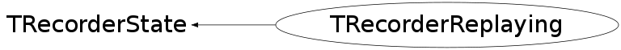

class TRecorderReplaying: public TRecorderState
Represents state of TRecorder when replaying
Function Members (Methods)
public:
| TRecorderReplaying(const TRecorderReplaying&) | |
| static TClass* | Class() |
| virtual void | Continue() |
| virtual TRecorder::ERecorderState | GetState() const |
| virtual TClass* | IsA() const |
| virtual void | TRecorderState::ListCmd(const char*) |
| virtual void | TRecorderState::ListGui(const char*) |
| TRecorderReplaying& | operator=(const TRecorderReplaying&) |
| virtual void | Pause(TRecorder* r) |
| virtual void | TRecorderState::PrevCanvases(const char*, Option_t*) |
| void | RegisterWindow(Window_t w) |
| virtual Bool_t | TRecorderState::Replay(TRecorder*, const char*, Bool_t, TRecorder::EReplayModes) |
| void | ReplayRealtime() |
| virtual void | ReplayStop(TRecorder* r) |
| virtual void | TRecorderState::Resume(TRecorder*) |
| virtual void | ShowMembers(TMemberInspector& insp) |
| virtual void | TRecorderState::Start(TRecorder*, const char*, Option_t*, Window_t*, Int_t) |
| virtual void | TRecorderState::Stop(TRecorder*, Bool_t) |
| virtual void | Streamer(TBuffer& b) |
| void | StreamerNVirtual(TBuffer& b) |
protected:
| TRecorderReplaying(const char* filename) | |
| void | TRecorderState::ChangeState(TRecorder* r, TRecorderState* s, Bool_t deletePreviousState) |
| Bool_t | Initialize(TRecorder* r, Bool_t showMouseCursor, TRecorder::EReplayModes mode) |
private:
| (unknown) | () |
| Bool_t | CanOverlap() |
| Bool_t | FilterEvent(TRecGuiEvent* e) |
| Bool_t | PrepareNextEvent() |
| Bool_t | RemapWindowReferences() |
Data Members
private:
| TCanvas* | fCanv | Used to record the previous canvases |
| TRecCmdEvent* | fCmdEvent | Commandline event being currently replayed |
| TTree* | fCmdTree | TTree with recorded commandline events |
| Int_t | fCmdTreeCounter | Counter of commandline events that have been replayed |
| Bool_t | fEventReplayed | Signalizes that the last event sent to the replaying has been already replayed. |
| TRecExtraEvent* | fExtraEvent | Extra event being currently replayed |
| TTree* | fExtraTree | TTree with recorded extra events (PaveLabels and Texts) |
| Int_t | fExtraTreeCounter | Counter of extra events that have been replayed |
| TFile* | fFile | ROOT file which the recorded events are being read from |
| Bool_t | fFilterStatusBar | Special flag to filter status bar element |
| TRecGuiEvent* | fGuiEvent | GUI event being currently replayed |
| TTree* | fGuiTree | TTree with recorded GUI events |
| Int_t | fGuiTreeCounter | Counter of GUI events that have been replayed |
| TMutex* | fMutex | |
| TRecEvent* | fNextEvent | The next event that is going to be replayed (GUI event or commandline) |
| TTime | fPreviousEventTime | Execution time of the previously replayed event. |
| TRecorder* | fRecorder | Reference to recorder (owner of this state) is kept in order to switch |
| Int_t | fRegWinCounter | Counter of registered windows when replaying |
| Bool_t | fShowMouseCursor | Specifies if mouse cursor should be also replayed |
| TTimer* | fTimer | Timer used for replaying |
| Bool_t | fWaitingForWindow | Signalizes that we wait for a window to be registered in order |
| ULong64_t | fWin | Window ID being currenty mapped |
| TTree* | fWinTree | TTree with recorded windows (=registered during recording) |
| Int_t | fWinTreeEntries | Number of registered windows during _recording_ |
| TList* | fWindowList | List of TRecWinPair objects. Mapping of window IDs is stored here. |
Class Charts
{kind=link}
{kind=link}
{kind=link}
{kind=link}

Function documentation
TRecorderReplaying(const char* filename)
Allocates all necessary data structures used for replaying What is allocated here is deleted in destructor
Bool_t Initialize(TRecorder* r, Bool_t showMouseCursor, TRecorder::EReplayModes mode)
void RegisterWindow(Window_t w)
Creates mapping for the newly registered window w and adds this mapping to fWindowList Called by signal whenever a new window is registered during replaying. The new window ID is mapped to the old one with the same number in the list of registered windows. It means that 1st new window is mapped to the 1st original, 2nd to the 2nd, Nth new to the Nth original.
Bool_t RemapWindowReferences()
All references to the old windows (IDs) in fNextEvent are replaced by new ones according to the mappings in fWindowList
Bool_t PrepareNextEvent()
Finds the next event in log file to replay and sets it to fNextEvent Reads both from CmdTree and GuiTree and chooses that event that becomes earlier - fCmdTreeCounter determines actual position in fCmdTree - fGuiTreeCounter determines actual position in fCmdTree If GUI event should be replayed, we must first make sure that there is appropriate mapping for this event RETURN VALUE: kFALSE = there is no event to be replayed kTRUE = there is still at least one event to be replayed. Cases: - fNextEvent = 0 => We are waiting for the appropriate window to be registered - fNextEvent != 0 => fNextEvent can be replayed (windows are ready)
Bool_t CanOverlap()
ButtonPress and ButtonRelease must be sometimes replayed more times Example: pressing of a button opens small window and user chooses something from that window (color) Window must be opened while user is choosing
void ReplayRealtime()
Replays the next event. It is called when fTimer times out. Every time fTimer is set again to time equal to time difference between current two events being replayed. It can happen that execution of an event lasts different time during the recording and during the replaying. If fTimer times out too early and the previous event has not been yet replayed, it is usually postponed in order to keep events execution in the right order. The excpetions are determined by TRecorderReplaying::CanOverlap()
TRecorderReplaying(const char* filename)